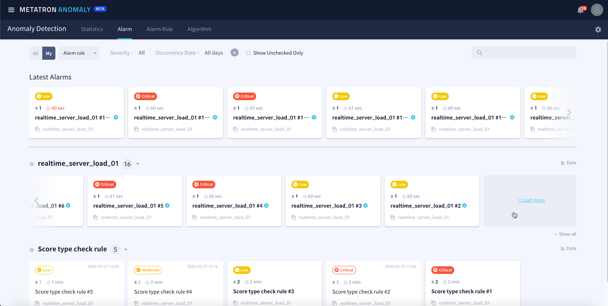
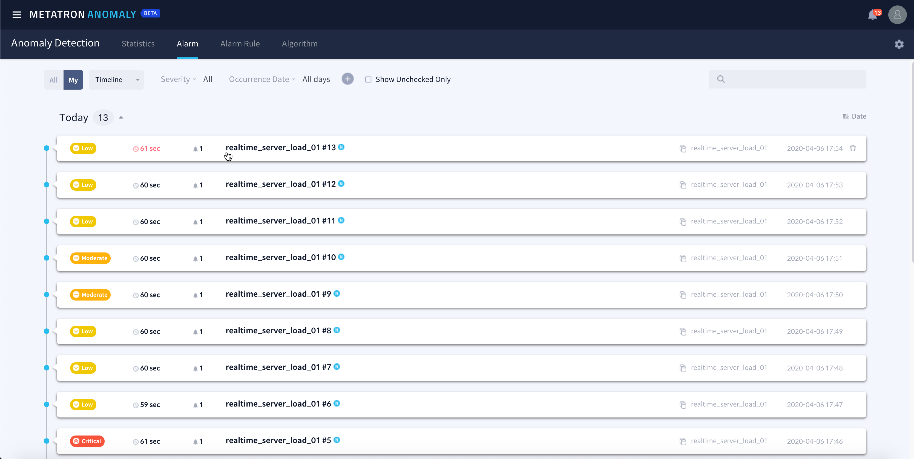
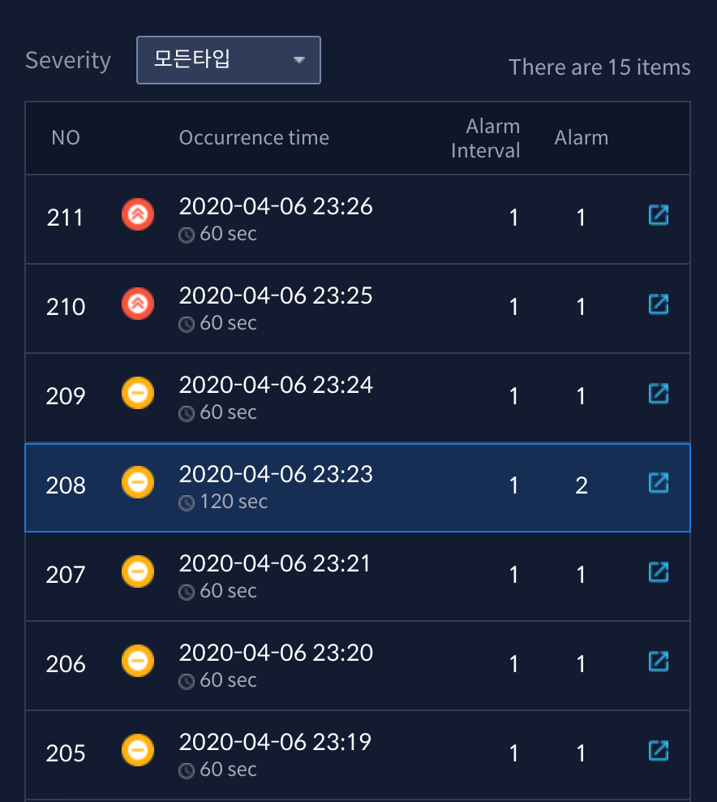
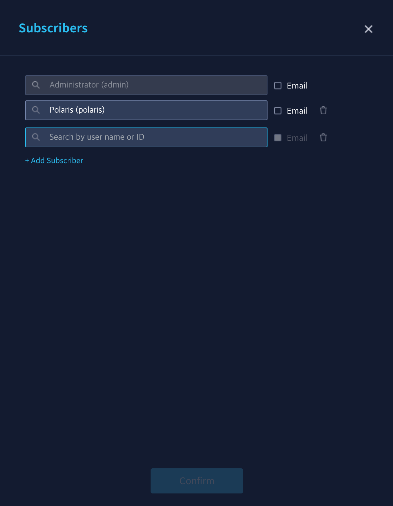
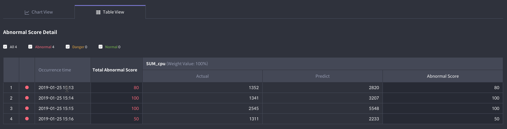

View alarm details¶
The alarm history can be viewed in the Alarm tab menu. Unlike the Statistics page, which gives an overview of alarm-related statistics, this menu is optimized for viewing and exploring individual alarms.
This menu consists of the following two pages:
Alarm list¶
The Alarm tab displays the alarms triggered to date. Using the Alarm rule / Timeline toggle box on the top of the page, the alarms can be sorted by alarm rule or time triggered.
Alarm rule (sorted by alarm rule)

Timeline (sorted by time triggered)

Click + Load more at the end of the category to view more alarm items in the same category.

Alarm details¶
Select an alarm item in list to view its detailed information. Each area in the alarm details page is described below:
Alarm Info area¶
This area presents alarm severity, time of occurrence, and the settings of the causing rule.

Alarm status boxes¶
These boxes display occurrence details of the selected alarm item. If alarms are triggered continuously at the given intervals, the number of alarm items remains at 1. In the figure below, alarms were set off continuously over 4 intervals (Alarms). Since the alarm interval is 1 minute, 4 alarms were triggered for a total of 4 minutes (Elapsed Time).


Chart View tab¶
This tab presents a chart of the abnormal score for the monitored aggregate data falling under the alarm period. The chart includes alarms triggered from reaching score limits (Critical, Major, Moderate, Low). See Basic principles for details on chart generation.

Total abnormal score: Displays the abnormal score calculated for all measures included in alarm rules.
Chart by measures: Presents the trends of the predicted and actual values for each individual measure included in the alarm rule.
Table View tab¶
The tab area presents the actual value, predicted value, and abnormal score for each alarm triggered.
